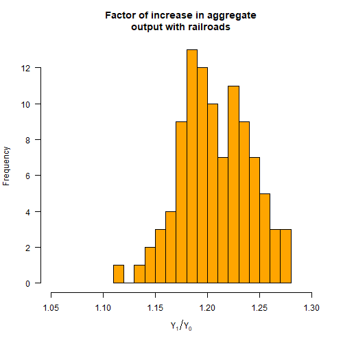

China (2010s)
The legacy of the high-speed rail expansion was a massive waste of resources, mountains of debt, an economy addicted to construction spending, and public corruption on an epic scale. […] When the cost of borrowing is low enough, even the most absurd investments can appear viable.
United States (1830-1873)
Very long time horizon (decades). What matters for economic output are:
Capital \(K\) and Labour \(L\).
Production function: \(Y = f(K, L) \propto K^\alpha L^{1-\alpha}\)
Capital evolves according to
\[ K_{t+1} = K_t + Y_t - \delta K_t \] where \(\delta\) is depreciation. Capasso et al (2012) considered capital \(K_t(x)\) and labour \(L_t(x)\) where \(x \in \Omega \subset \mathbb{R}^n\). In other words: what happens if you add a spatial element to the model?
Start with two regions: Town and Countryside
| S1 | \(K_0\) | \(L_0\) | \(w_0\) | \(Y_0\) | \(K_1\) | \(L_1\) | \(w_1\) | \(Y_1\) |
|---|---|---|---|---|---|---|---|---|
| Town | 10 | 5 | 1.26 | 6.30 | 16.30 | 5 | 1.48 | 7.41 |
| Country | 3 | 3 | 1.00 | 3 | 6 | 3 | 1.26 | 3.78 |
Final output: 7.41 + 3.78 = 11.19
| S2 | \(K_0\) | \(L_0\) | \(w_0\) | \(Y_0\) | \(K_1\) | \(L_1\) | \(w_1\) | \(Y_1\) |
|---|---|---|---|---|---|---|---|---|
| Town | 10 | 5 | 1.26 | 6.30 | 16.30 | 5.3 | 1.45 | 7.71 |
| Country | 3 | 3 | 1.00 | 3 | 6 | 2.7 | 1.30 | 3.52 |
Final output: 7.71 + 3.52 = 11.23
In this scenario, migration from the countryside to the town in search of higher wages caused total output to rise.
Work on a graph with nodes (“towns”) \(x\). Write \(N_x\) for the set of nodes adjacent to \(x\).
\[\begin{align*} K_{t+1}(x) &= K_t(x) + Y(K_t(x), L_t(x)) - \delta K_t(x)\\ L_{t+1}(x) &= L_t(x) + L_{t+1, in}(x) - L_{t+1, out}(x) \\ L_{t+1, in}(x) &= {\small \sum}_{ \{y \in N_x : w_x = \max\{w_z : z \in N_y \} \} }mL_y \\ L_{t+1, out}(x) &= mL_t(x)\delta_{\max\{w_y: y \in N_x\} > w_x} \end{align*}\]
This is an awkward way of writing: “at each node, a fraction \(m\) of labour moves to the neighbouring node, if any, with the highest wage”.
Capital and labour quickly cluster together. If you run the model for a long time, eventually wages will equalise and capital and labour will be evenly distributed.
Now capital \(K\) concentrates along the railway. Notice that nodes adjacent to the railway end up with lower growth than nodes further away, since the labour and capital of these nodes is sucked away by the railway.
We can ask the question: how much did economic growth in the US increase in the period 1830-1873 due to the railroads?

Adding the railroads increases GDP by about 20%. But: (!) Results sensitive to grid size (!) Many unrealistic assumptions
This model only applies to a developing country, and is too crude to be useful for transport policy. However: